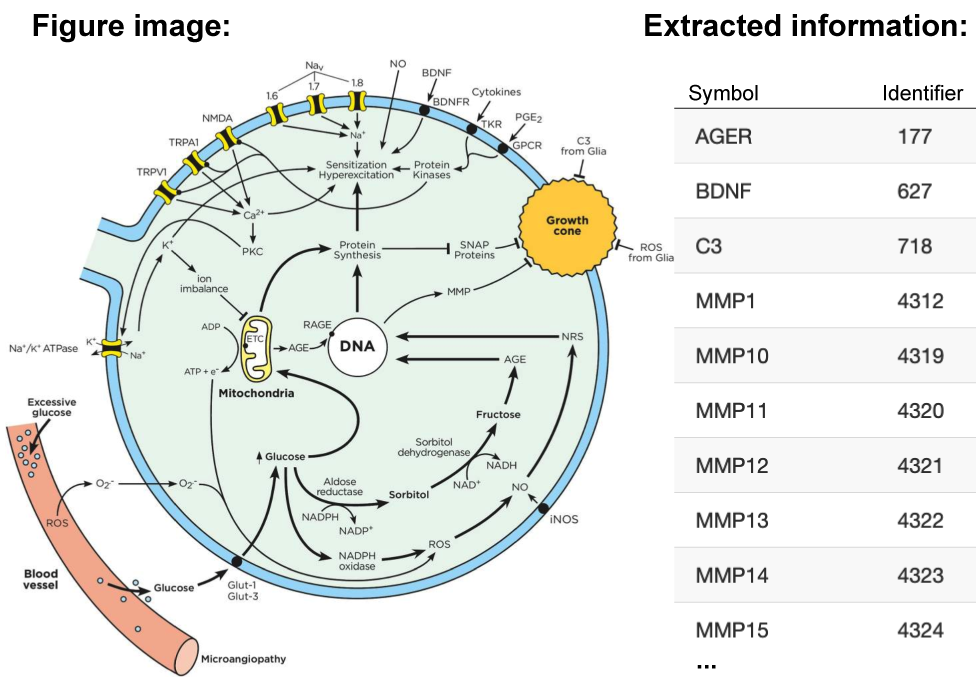

Pathway Figure OCR is an open science project dedicated to extracting pathway information from the published literature to be freely used by anyone.
Read more Video tourSearch published figures
Search by gene symbols, pathway names or other keywords

Pathway figures annotated with genes, metabolites, drugs and disease identifiers.